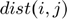

Contents
- ECE417 PROJECT: SLIC Superpixels Compared to State-of-the-Art Superpixel Methods
- Problem formulation - Effecient and accurate superpixel algorithms
- Proposed solution - SLIC Superpixels
- Data sources
- Solution - detailed description of SLIC algorithm (move the details to code once complete, and keep only the 'steps' or make every 'step' a function
- Visualisation of results
- Analysis and conclusions
- Custom source files/functions REMEMBER TO INCLUDE THE FILES IN THE HTML/PROJECT DIR
- References Use Chicago style referencing
ECE417 PROJECT: SLIC Superpixels Compared to State-of-the-Art Superpixel Methods
by Brendan Holmes
clc; close all; clear all
This project implements the algorithm presented in the paper SLIC Superpixels Compared to State-of-the-Art Superpixel Methods [1].
Problem formulation - Effecient and accurate superpixel algorithms
*What are they are and why are they used: * Superpixels are groupings of pixels used to reduce the complexity of subsequent image segmentation operations. Algorithms take as an input N superpixels, where the image is segmented into N groups.
Pixels inside a superpixel should be similar, and thus the boundaries between superpixels should maintain image boundaries. We desire that groups be approximately uniform in size, which is known as 'compactness'. However, this may come at the cost of adherence to image boundaries since the natural regions of an image may not correlate with the superpixel 'grid'. A good algorithm should balance these two criteria and will benefit further processing.
Computational efficiency is also important to minimize, and with the fastest state-of-the-art methods computing approximately linearly in image size, for example [2].
Proposed solution - SLIC Superpixels
The SLIC Superpixels algorithm is based on k -means clustering. In k-means clustering, data is first divided into k clusters with mean mu.
Then the following two steps are repeated until there is no change:
- Each data point is assigned to the cluster with the closest mean. In simple implementations, every data point is compared with every cluster, which results in a computational complexity of [1].
- The mean of each cluster is recalculated using the new cluster members.
Initial clustering has a non-trivial impact on results, and must be considered.
The SLIC algorithm basically follows this two-step process. Pixel and mean values are given a weighting depending on location in the colour-space and physical location in image. The distance uses both these attributes and the weighting coefficients provide control over compactness.
To reduce the complexity of the SLIC algorithm, in the assignment step, each pixel is only compared with clusters in a local neighbourhood.
Data sources
The required inputs are a colour image and a number of segments k . This project can handle most image file types. k must be a positive integer less than the number of pixels in the image. k values are generally between 50 and 1000.
test algorith define array of images and array of k values for testing
kArr = [100, 600, 100, 600]; im1 = imread('fish.jpg'); im2 = imread('xray.jpg'); for im_test = 1:4
% Define input image if im_test <=2 im = im1; else im = im2; end im = imresize(im, 0.1); % temporary im = rgb2lab(im); % Images are converted into CIELAB colour space. height = size(im, 1); width = size(im, 2);
Define input parameter k
k = kArr(im_test);
Solution - detailed description of SLIC algorithm (move the details to code once complete, and keep only the 'steps' or make every 'step' a function
Initialization
First, we initialise the centres of the clusters. Clusters are evenly spread over the image in a grid with interval
We return an array of length k that contains the weighted mean of each cluster.
S = sqrt((height*width)/k); % grid interval
workaround to ensure k is grid is full
if ceil(height/S)*ceil(width/S) > k k = ceil(height/S)*ceil(width/S); end C = initCentres(im, k, S); % initialise cluster centres
Each cluster is given a label from 1 and k and we store the cluster label for each pixel in a 2D array. We initialise cluster labels to -1, an invalid value.
label = ones(height, width) - 2;
The distance from each pixel to its current cluster mean is used to compare with other clusters. We initialise the distance to inf so that it changes on the first iteration.
dist = ones(height, width)./0;
numChanges = inf; % used to end loop if convergence
Iterate until convergence
for iter = 1:10 % algorithm should converge within 10 iterations
Assignment
Compare distance to current cluster mean with distance to means of clusters in a local neighbourhood. Assign pixel to cluster with closet mean. Distance is weighted using the following equation:
where is equal to a COMPACTNESS constant multiplied by , is the Euclidean distance between color components in CIELAB color space, and is the Euclidean distance between coordinates. If the pixel changes to a new cluster, the distance to that cluster is stored in 
[label_new, dist] = assignPixels(im, C, k, S, label, dist); if any(any(label_new == -1)==1) % DEBUGGING error('ERR: label_new contains -1 values') end
Update
We iterate through every pixel, add the colour and spatial values of that pixel to a running total for each cluster, then divide by the number of pixels in each cluster to obtain the arithmetic mean.
C = updateCentres(im, label_new, k);
If the number of pixels that change clusters is less than a threshold, finish iterating.
THRESHOLD = 0.01*height*width+10; % percent of pixels plus a constant for small images numChanges = sum(sum(label_new ~= label)); if numChanges < THRESHOLD break; end label = label_new;
end % end iterating
Enforce connectivity for 'orphaned' pixels. If a single pixel is surrounded by more than 4 pixels of a different cluster, assign that pixel to the other cluster. Not useful for small groups of orphaned pixels.
label = removeOrphans(im, label);
Visualisation of results
Segmented image with line boundaries IS SEGMENTED CORRECT TERM??
lines1 = edge(mod(mod(label, width/S), 2), 'sobel'); % get vert lines lines2 = edge(label, 'sobel'); % get horz lines lines = lines1+lines2; figure; imshow(lab2rgb(im) + lines);
Segmented image with average colour value for every superpixel
im_out = zeros(height, width, 3); for i = 1:height for j = 1:width im_out(i, j, :) = C(label(i, j), 1:3); end end figure; imshow(lab2rgb(im_out))
end % end image_test loop
Analysis and conclusions
Results
As shown in the visualisation, I was able to reproduce the results reported in the original paper. The algorithm behaved as expected, and demonstrates to be a simple and effective superpixel algorithm.
Performance FILL IN
There are a number of constant values that that were obtained through testing that affect the quality of the result. It was found that a COMPACTNESS constant value of between 2 and 6 was optimum. For the convergence threshold, it was found that if less than 1% of pixels changed clusters, the algorithm had sufficiently converged
Drawbacks and issues
Enforce connectivity function (removeOrphans) helps with lone pixels, but doesn't actually ensure all pixels in a superpixel are connected.
Encountered problems initialising the grid of superpixels. Used a workaround where if S due to k doesn't result in a square grid, we change k by adding up to an entire row or column of superpixels.
Drawing superpixel edge lines doesn't always work, but this doesn't affect functionality of algorithm
Custom source files/functions REMEMBER TO INCLUDE THE FILES IN THE HTML/PROJECT DIR
removeOrphans.m enforceConnectivity??
References Use Chicago style referencing
[1] Achanta, Radhakrishna, Appu Shaji, Kevin Smith, Aurelien Lucchi, Pascal Fua, and Sabine Süsstrunk. "SLIC superpixels compared to state-of-the-art superpixel methods." IEEE transactions on pattern analysis and machine intelligence 34, no. 11 (2012): 2274-2282. Harvard
[2] Levinshtein, Alex, Adrian Stere, Kiriakos N. Kutulakos, David J. Fleet, Sven J. Dickinson, and Kaleem Siddiqi. "Turbopixels: Fast superpixels using geometric flows." IEEE transactions on pattern analysis and machine intelligence 31, no. 12 (2009): 2290-2297. Harvard